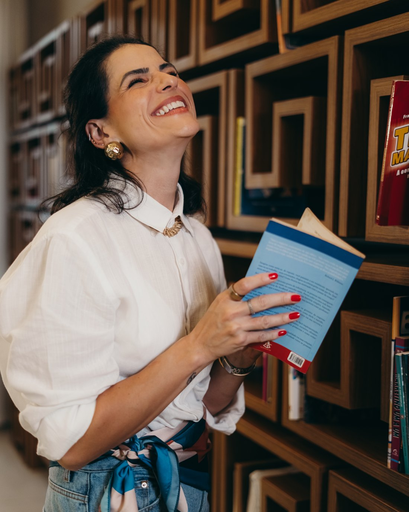

Crescer com autoria, clareza e segurança.
Quase 20 anos construindo carreira em tecnologia, startups e negócios digitais. A Verbo nasceu de uma percepção simples: trabalhar mais deixou de ser suficiente.
Mariana Leite · Diretora e Mentora de Carreiras

Passei quase 20 anos construindo minha carreira em empresas de tecnologia, startups e negócios digitais, atuando em áreas como vendas, operações, estratégia, crescimento e desenvolvimento de pessoas.
Trabalhei em ambientes de alta performance, participei da construção de times, produtos e operações e vivi, na prática, os desafios de crescer profissionalmente enquanto tentava descobrir quem queria me tornar ao longo do caminho.
A Verbo nasceu de uma percepção simples: trabalhar mais deixou de ser suficiente. Vi profissionais extremamente competentes permanecerem invisíveis, perderem oportunidades e duvidarem do próprio valor não por falta de capacidade, mas por não saberem transformar resultado em influência, visibilidade e posicionamento.
Carreira não é apenas sobre chegar no próximo cargo, mas chegar nele sem se perder no caminho.
Crescer continua sendo importante. Mas crescer com autoria, clareza e segurança se tornou ainda mais. Hoje ajudo profissionais da nova economia a desenvolver visão de negócio, influência e posicionamento para ocuparem os espaços que desejam sem precisar provar todos os dias que merecem estar ali.
Quando não estou trabalhando, provavelmente estou correndo, lendo sobre comportamento humano ou tentando responder as mesmas perguntas que acompanham muitos dos meus mentorados: o que realmente vale a pena levar para os próximos anos da nossa carreira?
- Vendas
- Operações
- Estratégia
- Crescimento
- Desenvolvimento de pessoas
- Tecnologia & startups
- Negócios digitais
Quem cresceu comigo
Antes da Verbo, passei quase 20 anos formando e liderando times. Estes são relatos de profissionais que se desenvolveram sob a minha gestão.
Entrei na coordenação trabalhando com a Mari e, nove meses depois, virei gerente. Ela me deixou errar, e eu errei muito, mas sempre com feedback claro do que melhorar, sem microgerenciar e sem me fazer sentir incapaz. Aprendi que dá pra ser guiada a resultado e profundamente People ao mesmo tempo, algo que eu não achava possível. Sou a gerente que sou hoje, com os melhores times e resultados, por causa disso.
Foram quatro anos de muito crescimento, que compõem quem eu sou hoje. A Mari me tirou da visão de que desenvolvimento era obrigação da empresa e me ensinou a buscar conhecimento como ganho meu, da minha evolução. Aprendi a acreditar mais em mim, porque quando eu não acreditava, eu via ela acreditando. Me tornei mais estratégica, pautando percepção em dados e fatos, e aprendi a me posicionar e conquistar meu espaço independente do julgamento alheio. Os ganhos foram muito além dos técnicos. Existe muito de você em mim.
A Mari foi minha primeira gestora, no meu primeiro emprego. Eu tinha me formado em Engenharia Civil sabendo que não seguiria na área, mas sem saber o que queria. Ela foi a primeira pessoa a reconhecer potenciais que eu não via em mim: foi quem citou produto como caminho possível, viu no meu perfil capacidade de planejamento estratégico. Isso me levou a um job rotation, me apaixonei pela área, e é o que faço há oito anos. Ela me ajudou a me encontrar, ver meus pontos fortes e conectar isso a uma oportunidade real de carreira.
Vamos descobrir o que vale a pena levar adiante?
Conta onde você está e pra onde quer ir. A inscrição é o primeiro passo da conversa.